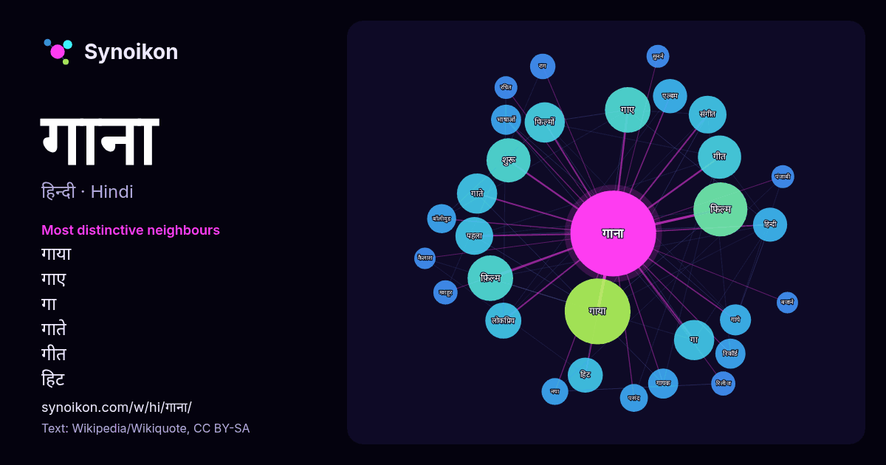

हिन्दी · आज के शब्दों की सूची
गाना
“song” · विकिपीडिया, Wikiquote के 865 प्रयोगों में इसके आसपास मिले शब्द।

सबसे विशिष्ट पड़ोसी
- गाया 56×
- गाए 31×
- गा 25×
- गाते 24×
- गीत 17×
- हिट 17×
- फिल्मों 16×
- गाये 15×
- फ़िल्म 15×
- एल्बम 13×
- गायक 12×
- बॉलीवुड 12×
- फिल्म 11×
- लोकप्रिय 11×
- राग 10×
- रिकॉर्ड 9.9×
- पहला 9.9×
- संगीत 9.7×
- पसंद 9.4×
- भाषाओं 9.4×
× = सामान्य विकिपीडिया टेक्स्ट की तुलना में कितने गुना अधिक।
सबसे अधिक आने वाले पड़ोसी
- गाया 67
- फिल्म 45
- उन्होंने 44
- गाए 32
- फ़िल्म 32
- शुरू 30
- गीत 29
- गा 25
- गाते 25
- फिल्मों 25
- पहला 22
- संगीत 22
- लोकप्रिय 20
- हिट 19
- एल्बम 18
- हिन्दी 18
- अधिक 17
- गाये 15
- गायक 14
- जिसमें 14
संदर्भ में
- बैठक गाना सूरीनाम के भारतीय समुदाय द्वारा उत्पन्न संगीत का एक रूप है। यह अन्य कैरिबियन प्रभाव के साथ भोजपुरी लोक गीतों का मिश्रण है। यह चटनी संगीत (जिसकी Wikipedia snippets · बैठक गाना
- लाहौर एक पंजाबी इंडी-पॉप गाना है जिसे गुरु रंधावा ने गाया है और टी-सीरीज़ द्वारा जारी किया गया है। आईएएनएस को दिए एक साक्षात्कार में, रंधावा ने "लाहौर" Wikipedia snippets · लाहौर (गाना)
- गाना मुक्त और लाइसेंस संगीत प्रदान करने वाला एक वाणिज्यिक संगीत स्ट्रीमिंग सेवा है। इसे इंडिया टाइम्स ने अप्रैल 2010 में बनाया है। यह हिन्दी एवं अंग्रेजी Wikipedia snippets · गाना (जालस्थल)
- " ह्वायट क्रिसमस " एक इरविंग बर्लिन गाना है जो पुराने ज़माने की क्रिसमस सेटिंग की याद दिलाता है। यह गाना बर्लिन द्वारा 1942 की संगीतमय फिल्म हॉलिडे इन Wikipedia snippets · ह्वायट क्रिसमस (गाना)
- द हॉट डॉग फ़्लेवर्ड वॉटर से एक गाना है। यह उस एल्बम का चौथा सिंगल है। इसे WWE के रेसलमेनिया X-सेवन आयोजन का विषय गाना होने के लिए भी जाना जाता है। Josh Wikipedia snippets · माई वे (लिम्प बिज़किट गाना)
- उनका गाया हुआ गाना "अच्छा सिला दिया तुने मेरे प्यार का" १ जनवरी १९९३ मे रिलीज हुआ । फिर १९९५ में टी सिरीज ने 'बेवफा सनम' फिल्म मे ये गाना अनुराधा पौडवाल Wikipedia snippets · सोनू निगम
- इंडिया" गाना भी गाया। इस के बाद, उन्होंने पल नामक एलबम रिलीज किया, जिसे सर्वश्रेष्ठ सोलो एल्बम के लिए स्टार स्क्रीन पुरस्कार मिला। इस एल्बम के दो गाने 'पल' Wikipedia snippets · केके
- याग्निक गायक थीं। इन्होंने ने 6 साल की उम्र में ही कोलकाता रेडीयो के लिए गाना शुरू कर दिया था। 10 साल की उम्र में वो मुंबई स्थानांतरित हो गयीं और वहीं Wikipedia snippets · अलका याज्ञिक
और शब्द
- इतिहास
- ईश्वर
- कार्य
- कुत्ता
- गर्मी
- घंटी
- घड़ी
- घोड़ा
- चाय
- चित्रकला
- छाया
- जंगल
- जलवायु
- जीवन
- तूफ़ान
- दर्पण
- द्वीप
- नक्षत्र
- नमक
- परिवार
- पहाड़
- पानी
- पैसा
- प्रकृति
- बगीचा
- बिल्ली
- भाषा
- भोजन
- माता
- मानचित्र
- मृत्यु
- मौन
- रेगिस्तान
- रेलगाड़ी
- रोटी
- वर्षा
- विज्ञान
- शक्ति
- शरद
- शहद
- शहर
- सड़क
- सत्य
- समय
- सर्दी
- सेतु
- स्वर्ण
- स्वास्थ्य
- हृदय
2026-10-09 को डिफ़ॉल्ट सेटिंग्स (±5 शब्द, मध्यम कॉर्पस) के साथ पहले से गणना की गई। इंटरैक्टिव मानचित्र इसे लाइव डेटा से ताज़ा कर सकता है।
मशीन-अनूदित इंटरफ़ेस; सुधारों का स्वागत है।